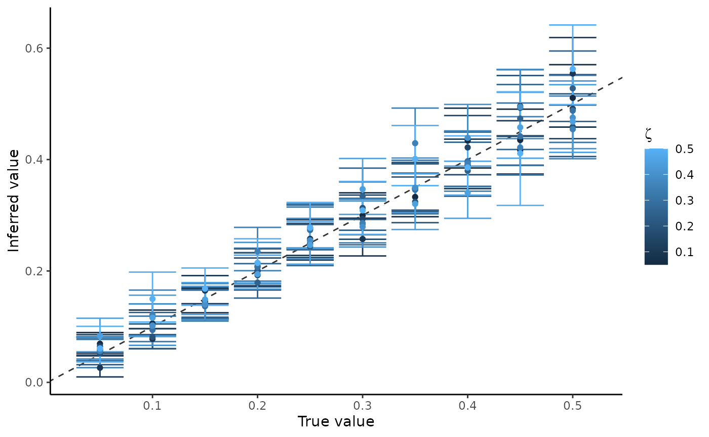
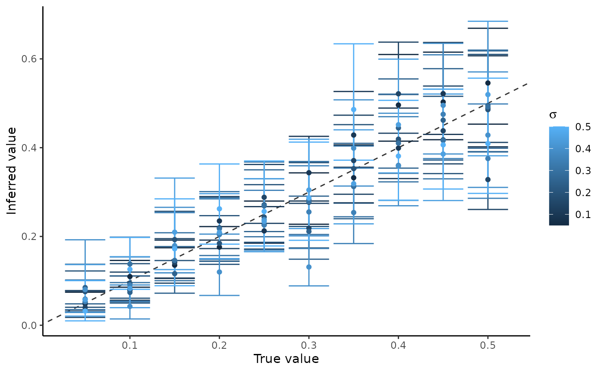

Simulation Validation Experiments
Source:vignettes/simulation_validation_experiments.Rmd
simulation_validation_experiments.Rmd
library(dplyr)
#>
#> Attaching package: 'dplyr'
#> The following objects are masked from 'package:stats':
#>
#> filter, lag
#> The following objects are masked from 'package:base':
#>
#> intersect, setdiff, setequal, union
library(ggplot2)
library(latex2exp)
library(bennu)Simulated data inference
This analysis assesses the model’s ability to infer the standard deviation of the monthly autocorrelation process () and the standard deviation of the uncorrelated error (). The number of regions is fixed to 4, with orders increasing quadratically over time to simulate the early stages of a program. Coefficients for the orders were fixed to and coefficients for the region intercept were fixed to . The initial condition of the monthly autocorrelation process was fixed to . The probability of reporting was simulated . For each unique pair of parameters a simulation was generated and then model inference was performed. We then compared the resulting posterior estimates and 95% credible intervals for each parameter to the values used in the simulation.
experiments <- expand_grid(
sigma = seq(0.05, 0.5, by = 0.05),
zeta = seq(0.05, 0.5, by = 0.05)
)
experimental_validation_data <- tibble()
for (i in 1:nrow(experiments)) {
sigma <- as.numeric(experiments[i, "sigma"])
zeta <- as.numeric(experiments[i, "zeta"])
d <- model_random_walk_data(
zeta = zeta, sigma = sigma,
region_coeffs = c(5, 0.5, 1, 2),
c_region = c(-1, 2, 0, 1), N_t = 48
)
fit <- est_naloxone(d)
row_results <- fit %>%
tidybayes::gather_draws(sigma, zeta) %>%
group_by(.variable) %>%
dplyr::summarise(
p50 = stats::quantile(.value, 0.5),
p25 = stats::quantile(.value, 0.25),
p75 = stats::quantile(.value, 0.75),
p05 = stats::quantile(.value, 0.05),
p95 = stats::quantile(.value, 0.95)
) %>%
left_join(
tibble(
.variable = c("sigma", "zeta"),
true_value = c(sigma, zeta)
)
) %>%
mutate(experiment = i)
experimental_validation_data <- experimental_validation_data %>%
bind_rows(row_results)
}Comparison of the inferred value to the true value. Exact correspondence would match with the dotted line. The median posterior value is shown as points with bars representing the 95% credible intervals. Colour was used to denote the value of used in the simulation.
p_res_sigma <- experimental_validation_data %>%
group_by(experiment) %>%
mutate(zeta_val = sum(true_value * as.numeric(.variable == "zeta"))) %>%
ungroup() %>%
filter(.variable == "sigma") %>%
ggplot(aes(x=true_value,y=true_value)) +
geom_abline(intercept = 0, slope = 1, linetype = "dashed", color = "gray20") +
geom_errorbar(aes(y = p50,ymin=p05,ymax=p95, color = zeta_val,
group = experiment)) +
geom_point(aes(y = p50, color = zeta_val)) +
theme_classic() +
labs(color = parse(text = TeX("$\\zeta$")),
x = "True value", y = "Inferred value")
show(p_res_sigma)
Comparison of the inferred value to the true value. Colour is used to denote the value of used in the simulation.
p_res_zeta <- experimental_validation_data %>%
group_by(experiment) %>%
mutate(sigma_val = sum(true_value * as.numeric(.variable == "sigma"))) %>%
ungroup() %>%
filter(.variable == "zeta") %>%
ggplot(aes(x=true_value,y=true_value)) +
geom_abline(intercept = 0, slope = 1, linetype = "dashed", color = "gray20") +
geom_errorbar(aes(y = p50,ymin=p05,ymax=p95, color = sigma_val,
group = experiment)) +
geom_point(aes(y = p50, color = sigma_val)) +
theme_classic() +
labs(color = parse(text = TeX("$\\sigma$")),
x = "True value", y = "Inferred value")
show(p_res_zeta)
Missing data inference
This experiment assesses the robustness of the model to missing data. This experiment was motivated by the fact that reported distribution data was frequently missing in reality. In this experiment, we vary the frequency of reporting of kits distributed and used, from once per month to once every ten months, using the same fixed parameter values as in the experiment above and with and . For each reporting frequency we conducted a fixed parameter simulation and then censored the data at the desired frequency. The posterior predictive distribution of kits used was then compared to the simulated number of kits used.
The code below generates the results of the experiment,
set.seed(43)
rstan::rstan_options(auto_write = TRUE)
options(mc.cores = 4)
experiments <- expand_grid(reporting_freq = seq(1, 10, by = 1))
missing_data_validation <- tibble()
for (ind in 1:nrow(experiments)) {
reporting_freq <- as.numeric(experiments[ind, "reporting_freq"])
# generate complete data
d_complete <- bennu::model_random_walk_data(
zeta = 0.25, sigma = 0.25,
region_coeffs = c(5, 0.5, 1, 2),
c_region = c(-1, 2, 0, 1), N_t = 48
)
# generate partial data based on reporting frequency
d_reported <- d_complete %>%
mutate(
nonreporting_times = times %% reporting_freq != 1,
Reported_Distributed = if_else(
times %% reporting_freq != 1,
NA_real_, Reported_Distributed
),
Reported_Used = if_else(
times %% reporting_freq != 1,
NA_real_, Reported_Used
)
)
if (reporting_freq == 1) {
d_reported <- d_complete
}
fit <- est_naloxone(d_reported)
row_used <- fit %>%
tidybayes::spread_draws(sim_used[i]) %>%
dplyr::left_join(
dplyr::mutate(d_complete, i = dplyr::row_number()),
by = "i"
) %>%
group_by(.chain, .iteration, .draw) %>%
dplyr::summarise(
Actual_Used = sum(Orders * p_use),
Sim_Used = sum(sim_used)
) %>%
ungroup() %>%
dplyr::mutate(p_diff = (Actual_Used - Sim_Used) / Actual_Used) %>%
dplyr::summarise(
p50 = stats::quantile(p_diff, 0.5),
p25 = stats::quantile(p_diff, 0.25),
p75 = stats::quantile(p_diff, 0.75),
p05 = stats::quantile(p_diff, 0.05),
p95 = stats::quantile(p_diff, 0.95)
) %>%
mutate(reporting_freq = reporting_freq)
missing_data_validation <- missing_data_validation %>% bind_rows(row_used)
}The following plot summarizes the relative error between the simulated number of kits used and the inferred number of kits used by reporting frequency,
p_res_freq <- missing_data_validation %>%
ggplot(aes(x=reporting_freq)) +
geom_hline(yintercept = 0, linetype = "dashed") +
geom_errorbar(aes(y = p50,ymin=p05,ymax=p95), color = "#4876FF") +
geom_errorbar(aes(y = p50,ymin=p25,ymax=p75), color = "#436EEE") +
geom_point(aes(y = p50), color = "#27408B") +
theme_classic() +
scale_y_continuous(labels = scales::percent) +
labs(x = "Frequency of reporting (months)", y = "Relative error")
show(p_res_freq)